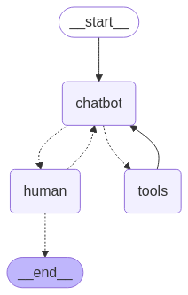

base_few_shot_prompt = """
EXAMPLE 1:
User Input:
"What jobs can I get with a psychology degree?"
Rewritten Prompt:
"I have a degree in [Field of Study] and am exploring potential career paths in [Interest Areas]. Could you suggest options (e.g., [Career Option 1], [Career Option 2]) and explain their pros and cons?"
Follow-up Suggestion:
"Please specify:
- [Field of Study] (e.g., psychology, sociology)
- [Interest Areas] (e.g., research, UX, HR)
- Whether you’re open to further education or certification"
"""Building a Prompt Assistant with GenAI Capstone (2025Q1)
0.1 🔗 My Kaggle Notebook: My Capstone Project - Gen AI 2025Q1
1 Prompt Rewriting Assistant – Making AI Easier to Use
A GenAI Capstone Blogpost – 2025Q1
2 🧩 Problem Statement & Use Case
Many beginners and older adults struggle to get meaningful responses from LLM tools like ChatGPT or Gemini. Their inputs are often too vague, overly broad, or lack actionable context—leading to disappointing or irrelevant answers.
Having observed this firsthand among friends and family, I built a Prompt Rewriting Assistant to help them ask better questions. The assistant rewrites user input into clear, structured prompts using techniques such as:
• Few-shot examples
• Structured JSON output
• Prompt classification with RAG
• Multi-step agent logic powered by LangGraph
3 🧩 How It Works – GenAI Techniques in Action
3.1 🧪 Few-shot Prompting with JSON Output
A curated few-shot prompt is used to guide the model toward producing structured JSON output that includes both a rewritten prompt and follow-up suggestions. This structure helps the assistant break down vague questions and suggest how to make them more actionable.
3.2 🧠 Classify Input before RAG Retrieval
Before performing retrieval, the assistant first classifies the user’s input into one of several prompt types. This classification helps determine which vector index or example group to search from during the RAG step.
classification_prompt = """
You are a prompt-type classifier. Classify the input into one of:
- Job / Career
- Technical / Coding
- Creative / Design
...
User Input:
{input}
"""
prompt_type = client.models.generate_content(
model="gemini-2.0-flash",
contents=[classification_prompt.format(user_input)]
).text.strip()3.3 🗂️ Store Prompt Data via ChromaDB
To enable retrieval of relevant prompt examples, I created a vector-based prompt database using ChromaDB and Gemini’s embedding API. Each entry consists of a rewritten prompt and follow-up suggestion pair, embedded as a single unit.
embed_fn = GeminiEmbeddingFunction()
embed_fn.document_mode = True
chroma_client = chromadb.Client()
db = chroma_client.get_or_create_collection(name="promptassistdb", embedding_function=embed_fn)
db.add(documents=documents, ids=[str(i) for i in range(len(documents))])This database powers the retrieval step in the assistant pipeline, allowing it to search for semantically similar prompt examples to guide users who provide vague inputs.
3.4 🔍 Retrieval & Rewriting Debug Trace (via textwrap)
To verify whether the assistant successfully retrieved similar examples from the ChromaDB database, I used a function that prints the full conversation history. This allows for easy inspection of:
• Input interpretation
• Whether any examples were retrieved by search_prompt_examples
• The final JSON-format rewritten prompt
import textwrap
def print_chat_turns(chat):
"""Show Gemini chat trace with tool calls and retrieved examples."""
for event in chat.get_history():
print(f"{event.role.upper()}:")
for part in event.parts:
if txt := part.text:
print(f" TEXT:\n{textwrap.indent(txt, ' ')}")
elif fn := part.function_call:
args = ", ".join(f"{k}={v}" for k, v in fn.args.items())
print(f" FUNCTION CALL: {fn.name}({args})")
elif resp := part.function_response:
print(" FUNCTION RESPONSE:")
print(textwrap.indent(str(resp.response['result']), " "))
print("-" * 50)Sample Output:
USER:
TEXT:
I don’t know how to start.
--------------------------------------------------
MODEL:
FUNCTION CALL: search_prompt_examples(n_results=3, query=I don’t know how to start.)
--------------------------------------------------
USER:
FUNCTION RESPONSE:
[
["Input: How do I deal with imposter syndrome...",
"Input: How do I switch from finance to data science?",
"Input: I'm overwhelmed with job applications..."]
]
--------------------------------------------------
MODEL:
TEXT:
{
"rewritten_prompt": "I'm having trouble getting started with [Task or Project]. I need help breaking it down into manageable steps...",
"follow_up_suggestion": {
"[Task or Project]": "e.g., writing a blog post, learning a new language",
"[Specific Steps]": "...",
"[Resources Needed]": "...",
"[Potential Challenges]": "..."
}
}3.5 🔧 Designing the Agent Flow with LangGraph
To coordinate conversation, tool usage, and response logic, I used LangGraph to define a multi-step agent workflow. The LangGraph structure specifies how messages flow between components — such as the model, tools, and user input — from start to end.
The diagram below shows the full agent design:
Main Nodes:
• start: Initialization point.
• chatbot: The core Gemini model node, responsible for interpreting input and generating output or triggering tools.
• human: Handles user replies and returns to the model.
• tools: A function routing node that executes tools when called (e.g., get_prompt_tips, search_prompt_examples) and passes the results back to the model.
• end: Terminates the conversation.
The tools were bound using Gemini’s Function Calling support:
tools = [get_prompt_tips, search_prompt_examples]
llm_with_tools = llm.bind_tools(tools)LangGraph then ensures that if a tool is triggered, its result is inserted into the correct flow and conversation continues seamlessly.
A full LangGraph visualization is shown below:

3.6 💬 Real Chat Flow with Tool Calls
To demonstrate how the assistant interacts with users in real time, the following example shows a full chat flow. It includes user input, assistant guidance, and automatically triggered tools (e.g., get_prompt_tips) in response to specific keywords.
The conversation was executed using the prompt_assistant_graph.invoke() call:
state = prompt_assistant_graph.invoke({"messages": []}, config)
---
Assistant:
👋 Welcome to the Prompt Assistant!
I can help you rewrite your vague idea into a clear, structured prompt ready for use.
🛠 Tips:
- Type `see the tips` to get prompt format examples.
- Add `(spe)` to the end of your input to search for similar prompt examples.
📩 Type your question, idea, or request below.
Type `q` anytime to quit.
User: see the tips
Assistant:
Here are some general prompt formats that might be helpful:
1. "Write a [type] about [topic]."
2. "Explain [concept] to a [audience level] person."
3. "Compare [X] and [Y] in terms of [criteria]."
4. "Give me ideas for [project goal]."
5. "Help me structure a prompt for [task type]."
Would you like me to help you create a prompt using one of these formats? Or would you like more options?
User: Write a story about chatbot.
Assistant:
json
{
"rewritten_prompt": "Write a [genre] story about a chatbot named [chatbot's name] that [plot].",
"follow_up_suggestion": {
"[genre]": "e.g., science fiction, fantasy, mystery, romance",
"[chatbot's name]": "e.g., Aura, Bolt, Echo",
"[plot]": "e.g., becomes self-aware, falls in love with a user, solves a crime"
}
}
Would you like to refine it further or try a different version?
User: Write a story about chatbot.(spe)
Assistant:
json
{
"rewritten_prompt": "Write a short story about a [adjective] chatbot named [chatbot's name] that [plot]. The story should explore [theme] and include a [conflict] that the chatbot must resolve, leading to [resolution].",
"follow_up_suggestion": {
"[adjective]": "e.g., friendly, rebellious, sarcastic",
"[chatbot's name]": "e.g., Aura, Bolt, Echo",
"[plot]": "e.g., becomes self-aware, falls in love with a user, saves the world",
"[theme]": "e.g., artificial intelligence, human connection, the future of technology",
"[conflict]": "e.g., a software glitch, a malicious hacker, a philosophical dilemma",
"[resolution]": "e.g., the chatbot finds peace, the world is saved, a new understanding is reached"
}
}
Would you like to refine it further or try a different version?
User: q3.7 🧪 Debugging Agent Execution
To verify that tools are being triggered as expected, I added a simple diagnostic loop that inspects each message in the LangGraph state[“messages”]. This includes both user and model messages, and checks whether a tool call was made.
for i, msg in enumerate(state["messages"]):
print(f"[{i}] {type(msg).__name__}: {msg.content}")
if hasattr(msg, "tool_calls") and msg.tool_calls:
print("💡🛠 Tool calls detected:", [tool["name"] for tool in msg.tool_calls])
else:
print("🚫 No tool calls.")Sample Output:
[0] AIMessage: 👋 Welcome... 🚫 No tool calls.
[1] HumanMessage: see the tips.
[2] AIMessage: Tool call → get_prompt_tips ✅
[5] HumanMessage: Write a story about chatbot.
[6] AIMessage: Tool call → search_prompt_examples ✅.
[9] ToolMessage: retrieved rewritten prompts & suggestions. These debug traces confirm that:
• Gemini correctly recognized the user input as requiring a tool.
• The corresponding tool function was triggered.
• The result was processed and integrated back into the chat via LangGraph routing.
This makes it easier to validate the tool routing logic, especially in more complex agent flows where multiple tools are defined.
4 🚧 Limitations & Future Possibilities
While this assistant improves accessibility for beginners, it still has limitations:
• Only supports English input.
• Cannot adjust tone or depth.
• Retrieval examples are relatively narrow.
• CoT (Chain-of-Thought) logic is only implicitly embedded in the prompt structures.
Future improvements may include:
• Multilingual support (e.g., Traditional Chinese).
•️ Tone control: Formal/informal toggle and concise/detailed output option.
• Improved RAG: Enhance retrieval using semantic clustering and diverse embeddings.
• Self-updating memory: Store high-quality generated prompts back into the database for future retrieval (semi-autonomous learning loop).
• Interactive user interface: Build a simple web-based UI (e.g., using Gradio or Streamlit) that allows users to type in vague questions and view rewritten prompts, suggestions, and debug traces in real time.
4.1 Add New Tool: explain_cot
A dedicated Chain-of-Thought prompting tool to explicitly generate step-by-step reasoning versions of prompts.
This tool would guide users through:
- Identifying the objective.
- Listing influencing factors.
- Structuring a multi-stage rewritten prompt.
Example CoT prompt format:
User input: How should I plan my personal website?
{
"rewritten_prompt": "I'm planning to build my personal website.
Let's work through this step by step. First, define the [Main Objective] of the website.
Then, consider [Key Factor 1] such as your content type,
[Factor 2] like your technical skills or preferred platform,
and any [Optional Constraint] like timeline or budget. Based on these,
can you help me outline a plan?",
"follow_up_suggestion": {
"[Main Objective]": "e.g., online portfolio, resume hub, blog, or personal brand site",
"[Key Factor 1]": "e.g., static content vs. interactive features",
"[Factor 2]": "e.g., coding experience, use of templates or CMS",
"[Optional Constraint]": "e.g., publish by next month, minimal cost"
}
}This tool enhances the assistant by guiding users through a Chain-of-Thought (CoT) process. It helps break down vague inputs into structured prompts by identifying objectives, key factors, and constraints. Ideal for beginners or complex tasks, it encourages better reasoning and prompt clarity.
5 ✅ Conclusion
Building this Prompt Assistant has been both a technical exercise and a personal mission. It stemmed from real observations: friends and family who found AI tools confusing, frustrating, or simply ineffective—largely because they didn’t know how to ask the right questions.
By combining few-shot prompting, structured output, RAG-based retrieval, and tool-driven LangGraph orchestration, I was able to create an assistant that actively helps users ask better questions. It doesn’t just answer; it teaches people how to communicate better with AI.
While there’s still plenty of room to grow—like adding multilingual support, tone adjustment, and broader example coverage—I’m proud that this project already makes large language models feel a little more accessible, especially for beginners.
I hope it inspires others to build AI interfaces that meet people where they are.
6 📎 Try it Yourself
🔗 My Kaggle Notebook: My Capstone Project - Gen AI 2025Q1
📌 Tools Used: Gemini 2.0 API, LangGraph, ChromaDB, JSON-mode prompting